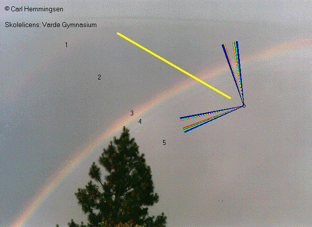

Med program og det tilhørende hæfte kan man arbejde med regnbuen på to måder. Dels kan man lave en række laboratorieøvelser, og dels kan man simulere bølgelære, farver, optik eller regnbuen i datalokalet. Man kan naturligvis også plukke nogle eksperimenter og nogle øvelser fra programmet.
Eleverne kan arbejde i grupper og man kan lave differentieret undervisning. Det vil være oplagt med et samarbejde med dansk, og arbejdet kan afsluttes med en artikel, f.eks. med titlen: »Hvordan opstår regnbuen?«
Vejledningerne er blevet til gennem flere årsprøveprojekter i fysik i 1.g på Allerød Gymnasium. De har også i en tillempet form været anvendt i naturfag. Eleverne har lavet øvelserne som omgangsøvelser, de har så at sige uden andre forudsætninger end brydningsloven, gennem eksperimenter »snuset« til forskellige sider af regnbuen. Ideen var så, at det hele faldt på plads, at spørgsmålet: »Hvordan virker regnbuen« kunne besvares, når alle eksperimenter var udført. Spørgsmålet blev af eleverne besvaret gennem en række opgaver, hvor der i det væsentlige skulle beskrives og forklares, og ikke regnes.
Øvelsesvejledningerne kan bruges på flere forskellige måder. Nogle af øvelserne kunne der skrives »rigtig« fysikrapport over, mens andre kunne efterbearbejdes som opgaver. Det kunne måske være en idé til et længerevarende eksperimentelt forløb af ca. 10 timers varighed eller måske et tematisk forløb, hvor grupper af elever viser eksperimenterne for hinanden.
Regnbuen har vel fascineret menneskene siden tidernes morgen, og eleverne er altid fascineret af alle bølgelærens flotte forsøg. Alligevel volder bølgelæren ofte problemer. Formålet med programmet Regnbuen er at få eleverne til at lære en del om lys og farver på en anden måde. Samtidig skulle programmet gerne give eleverne mulighed for individuelt at fordybe sig i emnet. Et edb-program kan aktivere de enkelte elever i højere grad end almindelig klasseundervisning.
Programmet Regnbuen består af en række simulationer. De er alle aktive, dvs. at man kan ændre på billedet. Der er udførlig hjælp til alle simulationer, og der er en række øvelser undervejs. Øvelserne er nummeret efter emne: Bølgelære: B#, optik: O# og regnbuen: R#.
Opgaverne 7-12 er noget sværere, men medtaget, så der også er mulighed for samarbejde med matematik, og supplerende stof til en 3.årsopgave.